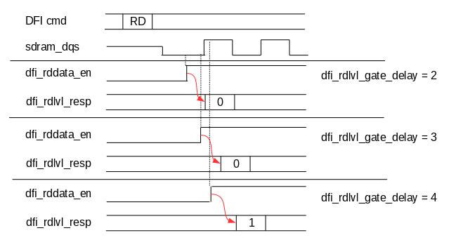
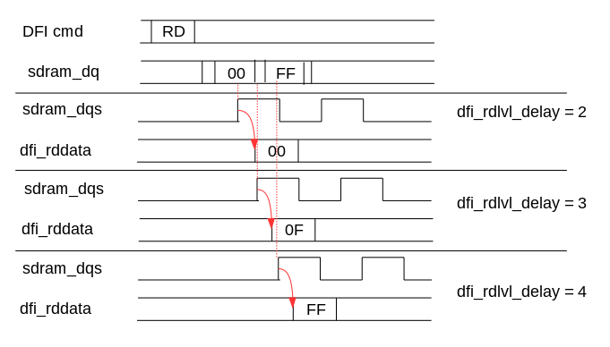

| Версия | 1.0 |
| Дата | 2020.01.16 |
| Разработчик | А.В. Корнюхин (kornukhin@mail.ru) |
PHY_DLL_CTRL [0x00] : DLL Control Register
| Биты | Название | Описание | Доступ | Начальное значение |
|---|---|---|---|---|
| 31:16 | - | Резерв | R | 0 |
| 15 | DLLR | DLL Reset. Управление сбросом DLL. Запись 1 переводит DLL в состояние сброса. Запись 0 переводит DLL в рабочий режим. Сброс DLL требуется перед началом работы с ним, после установки корректной опорной частоты. Следует иметь в виду, что если опорная частота (даже в режиме DLL Bypass) находится за пределами допустимого диапазона (менее 100 МГц), DLL может перейти в нерабочее состояние, вывести из которого может только DLL Reset. | R/W | 1 |
| 14:12 | - | Резерв | R | 0 |
| 11 | HF |
Диапазон опорных частот PHY:
|
R/W | 0 |
| 10 | DB |
DLL Bypass. Перевод DLL в режим bypass:
|
R/W | 1 |
| 9:0 | DL |
DLL Locked. Устанавливается в 1 при переходе DLL в рабочий режим. Бит 0 соответствует DLL в составе PHYC. Биты 9:1 соответствуют DLL в составе PHYD байт 8:0. Байт ECC соответствует старшему из присутствующих в конфигурации бит. |
R | 0 |
PHY_IO_CTRL [0x04] : IO Control Register
| Биты | Название | Описание | Доступ | Начальное значение |
|---|---|---|---|---|
| 31:6 | - | Резерв | R | 0 |
| 6 | DMOS | DM Off State. Состояние вывода DM, когда он не выдает данные: |
R/W | 0 |
| 5 | W1CK | DDR4 Write 1CK Preamble. Управление активацией режима записи в память DDR4 с преамбулой 1CK. | R/W | 0 |
| 4:3 | ODT |
Управление входным импедансом контактных площадок.
|
R/W | 0 |
| 2 | EDQS | Enable DQS. Разрешение использования дифференциальных стробов. Соответствует регистру MR1[10] в DDR2. | R/W | 0 |
| 1 | TOID | Turn Off Inactive Driver. Если установлен, позволяет переводить драйверы контактных площадок (WE_N, RAS_N, CAS_N, ADDR, BA) в третье состояние, если они не содержат валидную команду. Поскольку рабочее напряжение SSTL составляет VDD/2, это позволяет сократить потребляемую мощность. | R/W | 0 |
| 0 | PWD | SSTL PWD. Управление режимом пониженного энергопотребления SSTL контактных площадок. Установка в 1 приводит к переводу площадок в режим пониженного энергопотребления. | R/W | 0 |
PHY_TRAIN_CTRL [0x10] : Training Control Register
| Биты | Название | Описание | Доступ | Начальное значение |
|---|---|---|---|---|
| 31:7 | - | Резерв | R | 0 |
| 6:3 | ERT |
Enable Rank Training. Разрешение тренинга указанного RANK памяти в режиме автоматического тренинга. Установка бита ERT[0] приводит к запуску тренинга RANK0, ERT[1] - RANK1, ERT[2] - RANK2, ERT[3] - RANK[3]. Не допускается запуск тренинга, если данный регистр равен 0. Перед запуском ручного тренинга следует установить в значение с одним выбранным ранком. В конфигурации с RANK_CNT != 4 биты, отвечающие за отсутствующие ранки доступны только по чтению. В конфигурации с RANK_CNT = 1 доступен только по чтению. |
R/W | 1 |
| 2 | MGT |
Manual Gate Training. Команда запуска процедуры тренинга маски стробов для заданного в TRNG_BYTEx набора коэффициентов. Бит сбрасывается по окончании процедуры. Результат тренинга доступен в TRNG_BYTEx.RLS. В отличие от PHY_TRAIN_CTRL.RGT процедура проводится для 1 набора коэффициентов и не приводит к изменению DDR_GT по окончании процедуры. При запуске процедуры следует задать значение ERT соответствующее только одному ранку памяти, для которого и будет проводиться тренинг. |
R/W | 0 |
| 1 | RGT |
Запуск процедуры Gate Training. Сбрасывается по окончании тренинга маски строба. По окончании процедуры результат тренинга записывается в TRNG_BYTEx. На время тренинга не допускается работа с регистрами контроллера, за исключением чтения данного регистра. |
R/W | 0 |
| 0 | RDET |
Запуск процедуры Data Eye Training. Перед началом процедуры следует записать данные 0xFF-0x00 по адресу 0x0 SDRAM. Эти данные будут использоваться контроллером для тренинга смещения стробов. Сбрасывается по окончании тренинга. По окончании процедуры результат тренинга записывается в TRNG_BYTEx. На время тренинга не допускается работа с регистрами контроллера, за исключением чтения данного регистра. |
R/W | 0 |
PHY_MODE [0x18] : Mode Register
| Биты | Название | Описание | Доступ | Начальное значение |
|---|---|---|---|---|
| 31:3 | - | Резерв | R | 0 |
| 2 | D2M |
DDR2 Mode. Активация режима DDR2. |
R/W | 1 |
| 1 | - | Резерв | R | 0 |
| 0 | D4M |
DDR4 Mode. Активация режима DDR4. |
R/W | 0 |
TRNG_BYTE0 [0x1C] : Training Byte 0 Register
Регистр ассоциирован с параметрами младшего байта данных.
| Биты | Название | Описание | Присутствие | Доступ | Начальное значение |
|---|---|---|---|---|---|
| 31 | RLS |
Отражает текущее значение dfi_rdlvl_resp для байта 0. Может быть использован для проведения Gate Training в ручном режиме. Значение соответствует последнему RANK_CNT для которого проводилось чтение и не содержит информации о том, какой dfi_rdlvl_cs_n использовался для чтения. До проведения первого чтения из памяти (это должен выполнять Gate Training) регистр содержит невалидную информацию. |
всегда | R | x |
| 30 | - | Резерв | R | 0 | |
| 29:28 | ET |
Error Type. Регистр отражает текущее значение полей ошибок тренинга для последнего проверенного RANK. Коды ошибок следующие: Значение поля валидно только при завершенном тренинге (сброшены PHY_TRAIN_CTRL.MGT, PHY_TRAIN_CTRL.RGT, PHY_TRAIN_CTRL.RDET). Сбрасывается в момент начала Gate Training или Data Eye Training. |
всегда | R | x |
| 27:25 | DETr3 | Аналогично DETr0 только для RANK-3. |
RANK_CNT > 2 | R/W | 0 |
| 24:22 | DETr2 | Аналогично DETr0 только для RANK-2. |
RANK_CNT > 2 | R/W | 0 |
| 21:19 | DETr1 | Аналогично DETr0 только для RANK-1. |
RANK_CNT > 1 | R/W | 0 |
| 18:16 | DETr0 |
Смещение стробов DQS/DQS_N байта 0 для RANK-0.
|
всегда | R/W | 0 |
| 15:12 | GTr3 | Аналогично GTr0 только для RANK-3. |
RANK_CNT > 2 | R/W | 0 |
| 11:8 | GTr2 | Аналогично GTr0 только для RANK-2. |
RANK_CNT > 2 | R/W | 0 |
| 7:4 | GTr1 | Аналогично GTr0 только для RANK-1. |
RANK_CNT > 1 | R/W | 0 |
| 3:0 | GTr0 |
Смещение маски стробов DQS/DQS_N байта 0 для RANK-0. Управление сдвигом dfi_rddata_en на 1 такт для формирования маски при Gate Training определяется старшим разрядом GTr0. |
всегда | R/W | 0 |
TRNG_BYTE1 [0x20] : Training Byte 1 Register. Регистр ассоциирован с параметрами байта 1 данных. Регистр присутствует только в конфигурации SDRAM_BYTE_COUNT > 1. Описание регистра аналогично описанию TRNG_BYTE0.
TRNG_BYTE2 [0x24] : Training Byte 2 Register. Регистр ассоциирован с параметрами байта 2 данных. Регистр присутствует только в конфигурации SDRAM_BYTE_COUNT > 2. Описание регистра аналогично описанию TRNG_BYTE0.
TRNG_BYTE3 [0x28] : Training Byte 3 Register. Регистр ассоциирован с параметрами байта 3 данных. Регистр присутствует только в конфигурации SDRAM_BYTE_COUNT > 3. Описание регистра аналогично описанию TRNG_BYTE0.
TRNG_BYTE4 [0x2C] : Training Byte 4 Register. Регистр ассоциирован с параметрами байта 4 данных. Регистр присутствует только в конфигурации SDRAM_BYTE_COUNT > 4. Описание регистра аналогично описанию TRNG_BYTE0.
TRNG_BYTE5 [0x30] : Training Byte 5 Register. Регистр ассоциирован с параметрами байта 5 данных. Регистр присутствует только в конфигурации SDRAM_BYTE_COUNT > 5. Описание регистра аналогично описанию TRNG_BYTE0.
TRNG_BYTE6 [0x34] : Training Byte 6 Register. Регистр ассоциирован с параметрами байта 6 данных. Регистр присутствует только в конфигурации SDRAM_BYTE_COUNT > 6. Описание регистра аналогично описанию TRNG_BYTE0.
TRNG_BYTE7 [0x38] : Training Byte 7 Register. Регистр ассоциирован с параметрами байта 7 данных. Регистр присутствует только в конфигурации SDRAM_BYTE_COUNT > 7. Описание регистра аналогично описанию TRNG_BYTE0.
TRNG_BYTE8 [0x3C] : Training Byte 8 Register. Регистр ассоциирован с параметрами байта 8 данных . Регистр присутствует только в конфигурации SDRAM_BYTE_COUNT > 8. Описание регистра аналогично описанию TRNG_BYTE0.
Для обеспечения корректного функционирования PHY должен быть инициализирован и настроен в соответствии с характеристиками системы памяти. Для проверки временных характеристик и адаптации к системе используются процедуры тренинга. При запросе проведения тренинга ehl_ddr_phy переходит в один из двух режимом тренинга: тренинг положения маски стробов (Gate Training) или тренинг положения стробов (Data Eye Training). По окончании тренинга коэффициенты записываются в регистры ehl_ddr_phy. Значения коэффициентов могут быть записаны в регистры без проведения тренингов (например, в случае предварительно рассчитанных и сохраненных в памяти коэффициентов). Коэффициенты рассчитываются независимо для каждого байта данных.
Положение маски стробов dfi_rddata_en рассчитывается путем захвата сигнала sdram_dqs нарастающим фронтом dfi_rddata_en, задержанного в соответствии с заданным коэффициентом dfi_rdlvl_gate_delay (см. рисунок). Расширение диапазона ожидания строба доступно с помощью старшего бита dfi_rdlvl_gate_delay (регистры DDR_BYTEx.GTRy[3]). Если соответствующие биты установлены PHY использует в качестве маски сигнал dfi_rddata_en, задержанный на 1 такт синхросигнала памяти. Таким образом достигается покрытие 2 тактов при поиске валидного положения маски.
Тренинг положения маски строба DQS
Результат тренинга записывается в dfi_rdlvl_resp. Каждому байту данных соответствует своё значение dfi_rdlvl_resp, ассоциированное с соответствующим sdram_dqs.
Для набора коэффициентов dfi_rdlvl_gate_delay составляется таблица значений dfi_rdlvl_resp. В соответствии с таблицей ehl_ddr производит выбор положения маски. Первая 1 в таблице результатов означает положение смещенной маски не более, чем в 45 градусах от фронта sdram_dqs. Оптимальное значение dfi_rdlvl_gate_delay задается после тренинга на 2 меньше текущего значения при получении первой единицы на dfi_rdlvl_resp (0b010 для следующей таблицы).
| dfi_rdlvl_gate_delay | dfi_rdlvl_resp |
|---|---|
| 0000 | 0 |
| 0001 | 0 |
| 0010 | 0 |
| 0011 | 0 |
| 0100 | 1 |
| 0101 | 1 |
| 0110 | 1 |
| 0111 | 1 |
| 1000 | 0 |
| 1001 | 0 |
| 1010 | 0 |
| 1011 | 0 |
| 1100 | 1 |
| 1101 | 1 |
| 1110 | 1 |
| 1111 | 1 |
Тренинг положения стробов выполняется для gated версии сигнала sdram_dqs (sdram_dqs_n использует тот же коэффициент).
Происходит чтение из памяти для каждого значения dfi_rdlvl_delay для каждой байтовой линии данных.
Тренинг положения строба DQS
Если для всех значений dfi_rdlvl_delay прочитанные данные совпадают с ожидаемым значением (0x00), оптимальный результат соответствует смещению 90 градусов. В противном случае выбирается середина интервала, на котором были получены ожидаемые значения.
Тренинг положения маски и стробов может быть выполнен в одном из двух режимов: автоматическом или ручном.
В автоматическом режиме следует выполнить следующую последовательность:
Если результаты автоматического тренинга не приводят к стабильной работе контроллера, то следует провести тренинги в ручном режиме. Изначально проверить стабильность работы можно записав и прочитав тестовые данные по выбранному адресу памяти перед началом работы.
В ручном режиме следует выполнить следующую последовательность:
Возможно снизить потребляемый ток контактных площадок, установив PHY_IO_CTRL.TOID. Это реализуется переводом драйверов контактных площадок команд и адреса в третье состояние вместо подачи на них неактивных логических значений. Поскольку логические уровни SSTL отличаются от земли и питания, неактивные логические уровни приводят к токам утечки. Если же драйверы отключены (что допускается стандартом), то утечек не происходит.